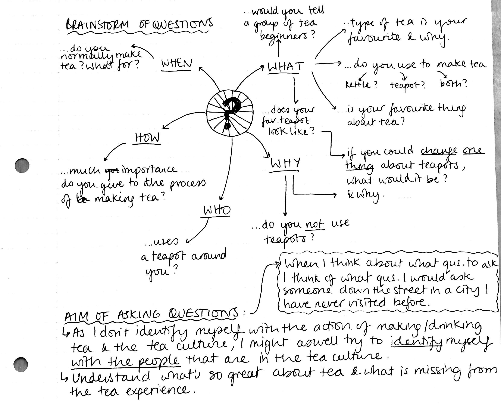
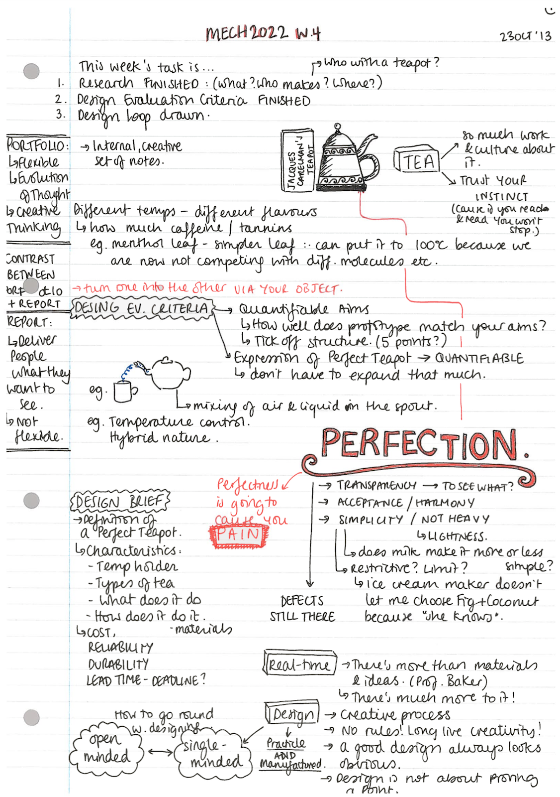

RESEARCH
Click on a subsection to know more The Art of a Teapot | From Vision to Mission | The Science of a Teapot
“
I wouldn't want to sound cliché, but as I immersed myself more and more into the tea culture, I have found that teapots are multidisciplinary. Out of all the ideas around tea that I have come across, a personal favourite is an anymous quote that says "strange how a teapot can represent at the same time the comforts of solitude and the pleasures of company." I have come to think that you can learn as much about teapots by talking to tea-lovers as by studying the chemical structure of the antioxidant compounds in tea. And as much as you think you may come to know about tea, you can never know enough; there will always be an aspect of tea that escapes you. As we'll see in later sections of this chapter, I have become predominantly interested in its Chinese origins and Japanese influences, and more precisely, in their 'Way of Tea'. I have tried to understand the way in which tea transcends the physical, and I have found its value in the experience that one makes out of it.
The following sections contain my notes, thoughts and plans, whether it be in the form of quotes, diagrams, scribbles and other. They are not in particular order and have no particular structure. They appear just as they came to me; in no particular logical way, however they slowly guided me towards my final two ideas.
The Art of a Teapot
WHAT IS TEA? SOME INTERESTING THOUGHTS BY SOME INTERESTING PEOPLE
Click on the arrows to navigate

While I don't believe that tea is the perfect representation of truth, beauty or the universal, I do believe it goes far beyond the simple task of drinking or brewing leaves in hot water. Tea is a ceremony in its own way; unlucky for me (devoted coffee drinker), it is incomparable the act of making and drinking coffee. Whether it be because of the history, the philosophy around it and the way it has been so incredibly well accepted and embraced by so many different cultures, tea has its own personality and so do teapots. This seems like a good first step towards thinking about the perfect teapot.
THE CHINESE ORIGINS
As I first began doing my research, I soon became deeply interested in its Chinese origins. I was lucky enough to be able to chat for a while with my friend Sunny from Beijing, who introduced me to the Yixing Teapot and the Way of Tea, which I then researched on the Internet.
The Classic of Tea is the very first monograph on tea in the world, written by Chinese writer Lu Yu between 760 CE and 780 CE (age of Tang Dynasty). For Lu Yu, tea symbolized the harmony and mysterious unity of the Universe. "He invested the Cha jing with the concept that dominated the religious thought of his age, whether Buddhist, Taoist, or Confucian: to see in the particular an expression of the universal". At first, I was determined to embrace this "beyond physical" experience of tea.
MORE RESEARCH, NOTES AND IDEAS BEFORE ARRIVING AT THE FINAL DESIGN


DESIGN COMES IN: A TEAPOT THAT FITS A PROBLEM
Below are some notes I made when researching about design and thinking how to best approach it. Major sources of inspiration where Bret Victor's "Brief Rant on the Future of Interaction Design" and Frank Chimero's visual essay on "How to Have an Idea". From them I got that suitability is paramount to quality, that there is no such thing as "purely original design", but instead a "making, breaking, collecting and connecting" of things and ideas. Good design must fit the person and fit the problem.

THE ABSTRACT, RAW-NESS OF DESIGN
When looking at design at its most conceptual stage, I had two main sources of inspiration:
1. Bret Victor's way of placing special emphasis on the act of interacting with an object with your hands (a book, where you can feel the weight distributed between both sides) because it reflects humans' capabilities and are only limited by a person's mind and a person's ability.
2. David Thoreau wrote in his autobiographical book 'Walden' that something is only yours when you make it with your own hands. People nowadays, he says, live in houses that are not theirs, buy stuff that is not theirs, because other people have created these for them. They don't perceive the real value of these objects ultimately unknown to them; their connection to them is pure fiction. I would have loved to make a DIY teapot that encompassed the idea that , but I soon realised that design is not about the abstractness of an object, that I cannot sell my teapot as being of pure philosophical value, and that I wanted my design to be less about aesthetics and more about the functionality.
In the light of wanting to make something that works, that fills a gap in the market, I came across the eldery population in the UK. Speaking with my friend's grandmother, I learned that herself and a greater population of eldery, were experiencing problems with picking the teapot up. She told me her pulse 'was not as it used to be' and now when she picked up the heavy, hot teapot she was worried that she would either drop the teapot or drop water inside it. This was my guidance towards the perfect teapot for a long time. Here are some notes on it:
I thought of making a rocking teapot, a teapot whose handle is attached by little springs to the teapot body so that all the vibrations coming from the hand acted on the handle and not on the teapot, and I thought of designing a teapot with a pivot that would enable the pouring of tea without the need to lift up the teapot. At this point, too many ideas were coming to my mind and I knew I had to reduce and focus them around a smaller, solid idea. Unfortunately, the eldery-targetted idea, although I often think about it and wonder how it would have gone had I gone for it, was eventually overcome by other, newer ideas.
JUGGLING THREE FACTORS
So we've said that good design must fit the person and fit the problem. But a good grade for Virginia involves a good project implementation too! In Spain, we have a saying that says something along the lines of "two are company, three are a horde". And this is precisely what I found most difficult in the first chapters of my research: trying to make the X teapot both fit a problem, fit a person - and be perfect.
Being the non-tea-drinker that I was, I had to immerse myself in the different types of tea, all new to me. I found that there was not one type of tea that I looooooved, but instead many that I quite enjoyed. It was not long til I started mixing teas around - Earl Gray and Peppermint is a personal favourite, although it changes around quite a lot - and I found that I was not the only one doing it.
. . . So it looked like I had come across upon something meaningful. If I can manage to make a teapot that works well for different types of tea and that satisfies those who like mixing tea and/or who enjoy tea when shared with other people (who may like another type of tea), and make this teapot 'perfect' in terms of fitting my target users and working without flaws, I might have just found my X teapot.
I merged this idea with my ever-lasting fear of spilling boiling water all over the place (especially on myself) and further merged my idea of a rocking teapot with the two-tea teapot. All the sketches can be found on the Chapter "Sketches".
Below is a recap of my thought process thus far:
From Vision to Mission
WHERE ARE WE NOW & WHERE ARE WE GOING
So perfection is subjective and context-dependent. Something or someone becomes perfect to you when you wouldn’t change it for anything else, whatsoever.
Perfection is not a science, it shouldn’t be seen as such, and it changes as the individual who has proclaimed it as ‘perfect’ changes him/herself. Instead, perfection comes from creating an emotional relation to the object (person, place, smell) and the inability to replace it with a substitute without decreasing your happiness (or utility as economists would say). Similarly, creating an emotional relation comes from using it. Hence, it is reasonable to conclude that how perfect you feel something is depends on the experience of using it.
WHERE DO WE GO FROM HERE: APPLYING ALL THE ABSTRACTNESS TO THE X TEAPOT
Let’s stick to that last sentence.

Now this is pretty much the basis of our project. In abstract terms, the X teapot allows the user to interact with it in a way they cannot interact with other teapots, thereby setting the stage for an emotional relationship to be developed between the user and the teapot itself. The X teapot must be hard to substitute, if not impossible - it wouldn’t be necessarily a bad thing if the teapot itself distracted the user from the final goal of actually using the teapot - which is drinking tea -, and instead focus on the tool itself. After all, when all the Mac lovers out there see a Mac, they don’t see a device where to write their essays, store their photos or update their Facebook statuses - but they see a Mac. A shiny, shiny, piece of metal. With a shiny keyboard. And many more elements that convert the medium into a goal, without us even realising.
But enough with the abstract side and shiny digressions. We’ve decided the X teapot will be perfect because the user experience will be so great in itself that the teapot stops being the way you make tea and slowly becomes the reason why you are drinking tea. This is particularly relevant to my personal position regarding tea. Being a really, reaaaally half-heartedly committed tea drinker, I find ever so interesting to find a way of convincing me that tea is worth drinking - because tea is worth making.
Voilà. Perfect user experience. Different. Risky! And simple. Next step? Let’s turn these into the Design Evaluation Criteria for our project. And for that we’ll need some science.
The Science of a Teapot
LOOKING AT TEA FROM A CHEMIST'S PERSPECTIVE (more here)
Tea contains almost 2000 chemical compounds. Many of these chemicals possess antioxidant properties and health benefits (just like in coffee!). However, the chemical structure of these antioxidant compounds differ between different types of tea; for example, the chemicals in green and black tea are different (even though they come from the exact same plant).
White tea, green tea, Oolong tea and black tea come from the exact same plant: Camelia sinensis, however the flavor and chemical content develops by a “chemical oxidation” during tea processing. This oxidation is stopped by applying heat because heat inactivates the enzymes. Enzymes and small molecules (such as flavonoids) occupy many specific compartments inside the living cells.
The chemistry behind tea partly describes how the flavour of tea changes over time, and therefore is fundamental in order to understand how to brew tea in the optimal way. Experienced tea-drinkers often insist the tea should not be stirred around while it is brewing (sometimes called winding or mashing in the UK). This, they say, will do little to strengthen the tea, but is likely to bring the tannins out in the same way that brewing too long will do. For the same reason, one should not squeeze the last drops out of a teabag; if stronger tea is desired, more tea leaves should be used.
So how do teapots affect the chemicals in tea?
When tea is brewed (inside the teapot):
1. The concentration of water-soluble chemicals is dependent on temperature because chemicals tend to become more soluble at higher temperatures.
2. The concentration of water soluble chemicals will change over time since they will have to diffuse from the inside of the pieces of tea to the water on the outside.
Given the above, the material of the teapot will affect a lot the temperature inside it, how much heat is lost, and therefore the brewing of the tea.